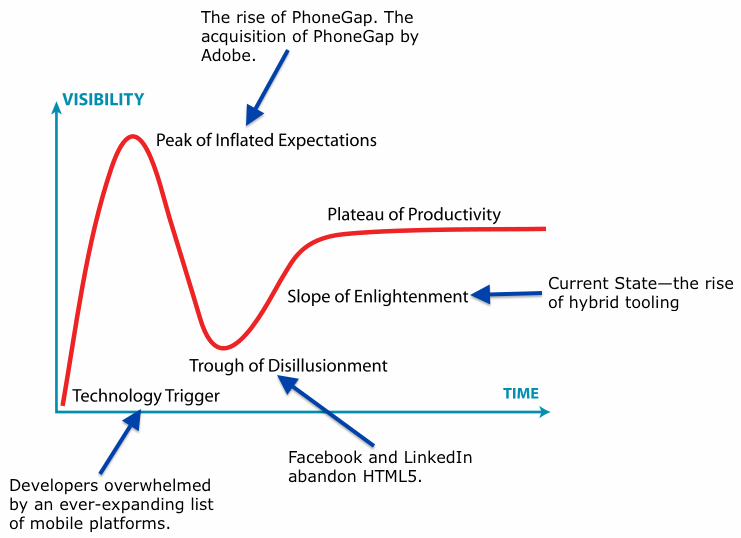
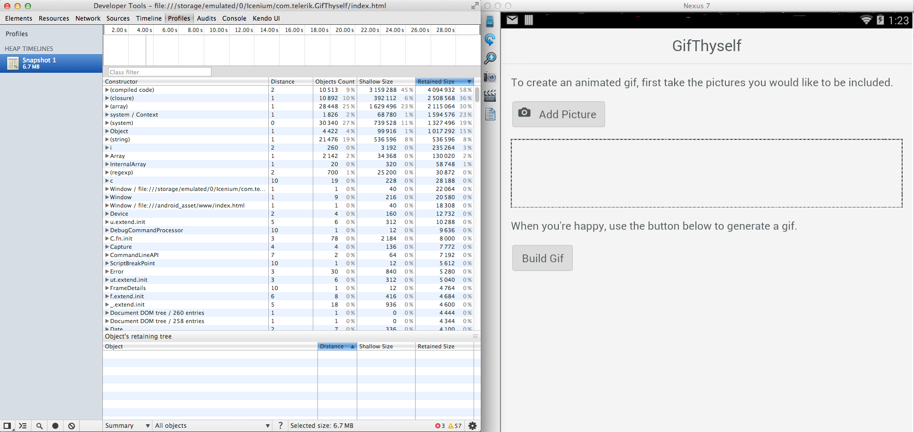
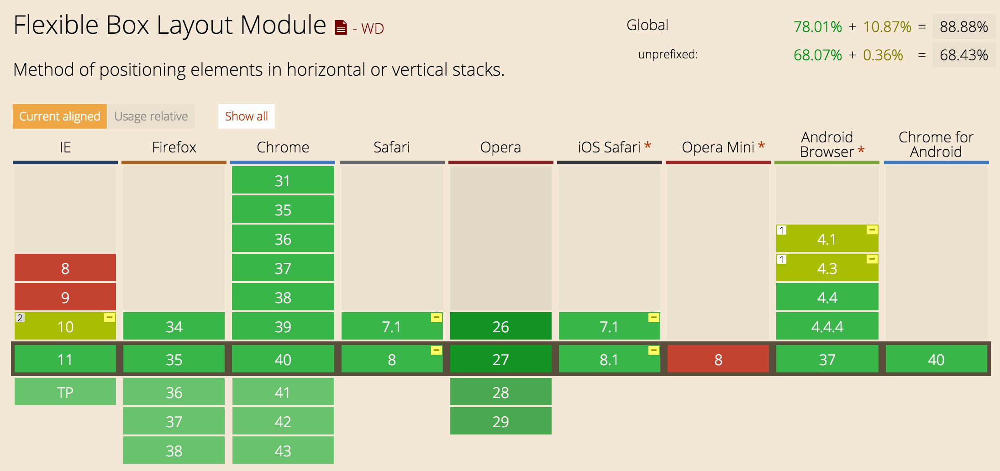
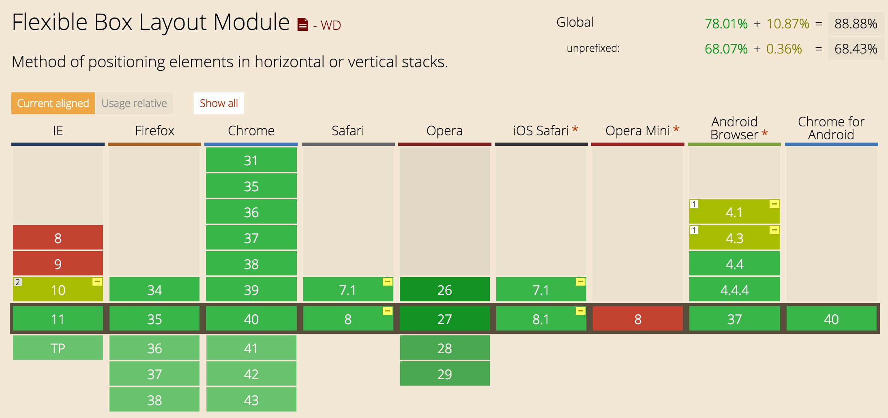

Cross-platform
mobile Development
More Platforms. More Problems.
- Proficiency in each platform required
- Entirely separate code bases
- Timely & expensive development
- Diminishing returns


Cross-platform
Mobile Development

NO ring to rule them all!
Framework Types
- Web-based (hybrid)
- Cordova/PhoneGap
- Ionic
- jQuery Mobile
- Sencha Touch
- Converters
- Unity
- Corona
- Appcelerator
- NativeScript
- Codename One
- Xamarin
Converters
| Pros | Cons |
|---|---|
| Performance | API updates and bug-fixes reliance. |
| Java, C++, .NET, JavaScript | UI tweaking inevitable to achieve native feel |
| Difficult maintance for large apps |
Hybrid Apps!
HTML5 that acts like native
Web wrapped in native layer
Direct access to native APIs
Familiar web dev environment
A single code base (web platform!)
Hybrid Apps!
| Pros | Cons |
|---|---|
| Leverage existing knowledge (cheaper) | Performance hit (larger memory footprint) |
| Rapid development | UI tweaking to achieve native feel |
| Many available options | No Direct access to latest UIs and APIs |
| Mobile site with same code | Native: Vendors' IDEs and frameworks |
Gartner hype cycle
“When I’m introspective about the last few years I think the biggest mistake that we made, as a company, is betting too much on HTML5 as opposed to native… because it just wasn’t there.”Mark Zuckerberg, September 2012

“ There are a few things that are critically missing. One is tooling support — having a debugger that actually works, performance tools that tell you where the memory is running out.
If you look at Android and iOS, there are two very large corporations that are focused on building tools to give a lot of detailed information when things go wrong in production. On the mobile web side, getting those desktop tools to work for mobile devices is really difficult.”
Kiran Prasad, April 2013

“Our research on HTML5 vs native apps in Q3 2013 showed that the key issue in HTML5 development, is not performance or API reach, but the lack of mature development tools.”

TOOLING IMPROVEMENT #1
REMOTE DEBUGGING (ios6+)

TOOLING IMPROVEMENT #1
REMOTE DEBUGGING (android 4.4+)
TOOLING IMPROVEMENT #2
CLOUD BASED BUILDS
- PhoneGap Build
- Telerik AppBuilder
- Ionic Package
TOOLING IMPROVEMENT #3
IN-APP LIVE UPDATES
- PhoneGap Hydration
- Ionic deploy
- Trigger.io reload
- Meteor Hot Code Push
TOOLING IMPROVEMENT #3
IN-APP LIVE UPDATES
Apple Developer Program Agreement: Section 3.3.2
“Except as set forth in the next paragraph, an Application may not download or install executable code. Interpreted code may only be used in an Application if all scripts, code and interpreters are packaged in the Application and not downloaded. The only exceptions to the foregoing are scripts and code downloaded and run by Apple's built-in WebKit framework or JavascriptCore, provided that such scripts and code do not change the primary purpose of the Application by providing features or functionality that are inconsistent with the intended and advertised purpose of the Application as submitted to the App Store.”
TOOLING IMPROVEMENT #4
LIVE RELOAD (DEVELOPMENT)
- Teleric AppBuilder LiveSync
- Ionic LiveReload

Web-standards
Have improved!
caniuse.com is lookin' pretty good nowadays
Android (4.4+) is now Chromium-based
iOS users keep their devices up-to-date
 

75% of devices are using io9.

As measured by the App Store on January 11, 2016.
https://developer.apple.com/support/app-store/

Data collected during a 7-day period ending on January 4, 2016.
Any versions with less than 0.1% distribution are not shown.
http://developer.android.com/about/dashboards/index.html
“It's not 2007 anymore”
| Year | Device | Processor | RAM |
|---|---|---|---|
| 2007 | iPhone | 400 MHz | 128 MB |
| 2010 | iPhone 4 | 1 GHz | 512 MB |
| 2015 | iPhone 6 | 1.4 GHz dual-core | 1 GB |
Performance improvement (android)
- Chromium based WebView (android 4.4+)
- CSS3 Flexbox
- Web Sockets (remote debugging)
- Web Workers (multithreaded programming)
- Hardware-accelerated CSS animations
- Auto-updating WebView (android 5.0+)
- Crosswalk (Chromium based webview for android < 4.4)
Performance improvement (iOS)
- WKWebView (ios 8.0+)
- Nitro JIT JavaScript engine
- 4X improvement in Javascript Execution Time
- 20% improvement in general browsing speed
- Crosswalk
Web Technologies You Already
Know & Love


(Front-end developers will feel right at home)
Superpowered by
Angular
Extends the HTML vocabulary
Proven for large-scale app development
UI Components using Directives & Services
Sass!
CSS generated from the Sass preprocessor
Quickly give your app its own look and feel
CSS designed to be easily overridden
Variables based with default settings
How it all comes together
- Your App
- Ionic
- Angular
- WebView (Cordova)
- Native App
Complex Lists
- AngularJS Directive
- Buttons exposed by swiping
- Reorder
- Delete
List Item {{ item.id }}
Collection Repeat
- Replacement for Angular's ng-repeat
- Inspired by iOS’s UICollectionView
- Scroll through thousands of items
- Only renders the viewable items
- Smooth scrolling!
{{ c.name }}
{{ c.email }}
Navigation
- Uses AngularUI Router
- Shows back button when possible
- Transitions follow direction of nav
- Updates the app's URL
- Multi-history stack
- Cached views
Other Components
- Side Menus
- Actionsheet
- Modal
- Pull To Refresh
- Spinners
- Slidebox
- Infinite Scroll
- Swipeable List Options
- Popup
- Popover
- Loading Overlay
- Inputs
- Buttons
- etc.
MIT LICENSED
Free to use (even commercially)
Ionicons

700+ MIT licensed font-icons included
npm install -g ionic cordova

Boilerplate app structure ready for customization
LiveReload both local and native builds
Build and run native apps
Modern
Chromium!
Chromium for Android WebViews
Upgrade Android 4.1+ and above
Same hardware, modern software
Amazing performance improvements

Get Started with Ionic!
Getting started guide
ionicframework.com/getting-started
Documentation
ionicframework.com/docs
Visit the Community Forum
forum.ionicframework.com
Contribute on GitHub
github.com/driftyco/ionic